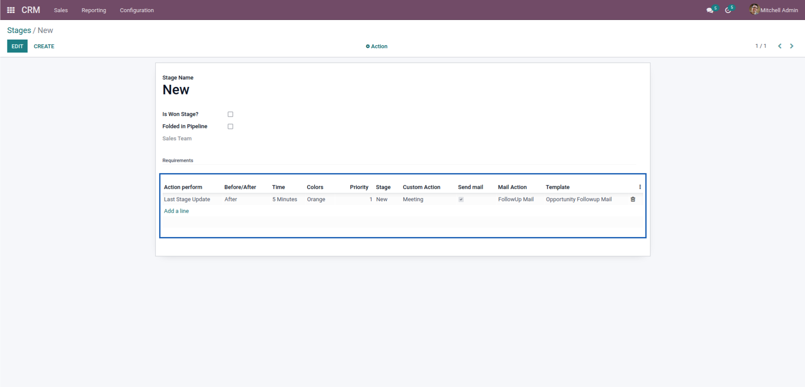

Key Features
1. Easy to identify Kanban records by different colors.
2. Auto change Kanban records color based on CRM stage configuration.
3. Select specific template for send mail to customer on specific time or stage of opportunity.
4. Auto create meeting and other activities.
Here is the CRM stage action configuration.

Points
Action Perform: Select any datetime fields of opportunity.
Before/After: Decide when action perform.
Time: how much time before/after action will perform
Color: Choose color for identify Kanban view action
Priority: Decide which one apply first if there is more then one lines
Custom Action: Apply activities on opportunity
Send mail: send mail to customer of opportunity if this field checked
Mail Action: Reminder/Follow-up options
Template: Select any lead/opportunity related mail template